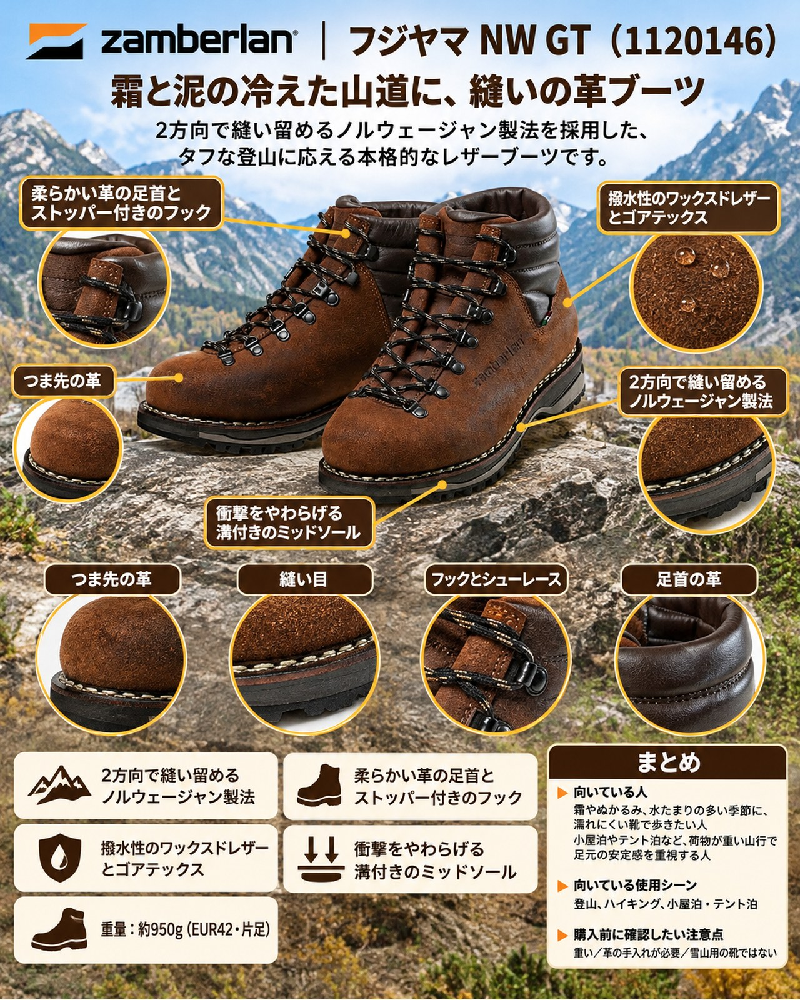

11月下旬、朝の冷え込みが強まると、低山でも登山道に霜が降り、日が当たるとぬかるみに変わります。足元が冷えて濡れやすい季節には、水を通しにくい靴が頼りになります。
導入
11月下旬、朝の冷え込みが強まると、低山でも登山道に霜が降り、日が当たるとぬかるみに変わります。足元が冷えて濡れやすい季節には、水を通しにくい靴が頼りになります。
今回紹介するのは、イタリアのザンバラン（ZAMBERLAN）の「フジヤマ NW GT」です。日本向けに生まれた「フジヤマ」を刷新したモデルで、ワックスを含ませたスエードレザーのアッパーと、伝統的な「ノルウェージャン製法」で作られたクラシックな革の登山靴です。軽さよりも、丈夫さと安定感を重く見る人に向いた1足です。
基本スペック
※仕様と価格は2026年11月25日時点のもの。セール中の価格は変わることがあります。
| 項目 | 内容 |
|---|---|
| 商品名 | フジヤマ NW GT |
| 品番 | 1120146 |
| 価格（税込） | 61,600円（2026年11月25日時点はセールで24,640円） |
| 重量 | 約950g（EUR42・片足） |
| アッパー | ハイドロブロック・スエードワックスドレザー（2.2〜2.4mm） |
| ライニング | ゴアテックス・パフォーマンスコンフォート |
| アウトソール | ヴィブラム NorTrack |
| ミッドソール | PU |
| フレックス | Nor-Flex 3.5mm PE |
| ラスト | バックパッキングフィット |
| サイズ | EUR40〜47（約25.0〜28.5cm、スペック表の記載） |
| カラー | 440ブラウン |
2方向で縫い留めるノルウェージャン製法
スクイ縫いとダシ縫いの2方向で、アッパーとソールを縫い留めています。接着だけに頼らない作りのため、長く履く道具として選びやすい靴です。
撥水性のワックスドレザーとゴアテックス
アッパーは撥水性を持たせたワックスドレザーで、内側にはゴアテックスのライニングが入ります。霜が解けたぬかるみや、沢の小さな渡渉がある道で安心感があります。
柔らかい革の足首とストッパー付きのフック
足首周りには柔らかいレザーが使われ、足首の自由度を保つ設計です。シューレースは丸紐で、フックの1つにストッパー機能があるため、締めた後に緩みにくく、登りと下りで締め具合を変えやすくなっています。
衝撃をやわらげる溝付きのミッドソール
ソールはヴィブラム NorTrack で、ミッドソールに溝を設けて衝撃をやわらげる構造です。
デメリット・注意点
- 重い：片足約950g（EUR42）です。合成素材中心の軽量ブーツと比べるとはっきり重く、脚力に自信がない人には負担になります。
- 革の手入れが必要：ワックスドレザーは、つま先やかかとが擦れると少しずつ水を吸いやすくなります。撥水クリームやスプレーでの手入れと、帰宅後の汚れ落としと保革が欠かせません。
- 雪山用の靴ではない：保温材の記載がありません。初冬の高山や積雪期の山には、断熱材入りの冬靴を選んでください。
- カラーは1色のみ：440ブラウンだけで、色は選べません。
- ワイズの記載がない：ワイズの表記はありません。購入前に試し履きして確認するのが確実です。
向いている人・向いていない人
◎向いている人
- 霜やぬかるみ、水たまりの多い季節に、濡れにくい靴で歩きたい人
- 小屋泊やテント泊など、荷物が重い山行で足元の安定感を重視する人
- 手入れをしながら1足を長く履きたい人
- クラシックな革の登山靴の見た目が好きな人
△向いていない人
- 日帰りの低山を軽快に歩きたい人（軽量なトレッキングシューズのほうが合います）
- 革の手入れに手間をかけたくない人
- 雪の積もった山に行く予定の人
まとめ
ザンバランの「フジヤマ NW GT」は、ノルウェージャン製法の丈夫さと、革とゴアテックスによる濡れへの強さを持つクラシックなレザーブーツです。片足約950gと重く、手入れも必要ですが、そのぶん安定感があり、長く付き合える靴です。冷え込みで霜やぬかるみが増えるこれからの季節、重い荷物を背負う山行の足元を固めたい人に向いています。なお、雪山には対応していない点に注意してください。
この記事で紹介した商品
価格・重量・在庫は各ブランド公式サイトの記載（確認日つき）にもとづきます。商品を押すと、購入先を選べます。
この記事にはアフィリエイト広告が含まれます。リンク先での購入により、当サイトが報酬を受け取る場合があります。山行の前には、最新の気象とルートの状況を必ずご確認ください。